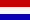
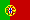
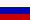

|
Det europeiska CW-förbundet
EUCW tips för telegrafi-QSO
Telegrafi-QSO på olika språk
|
|
Språkversioner av tips för hur man kör telegrafi:
Senast uppdaterat 2016-09-21
De är språken är de olika medlemsklubbarnas huvudspråk:
BG bulgariska/Български
- frivilliga har inte hört av sig med förslag ännu
 CZ tjeckiska/
Čeština
- frivilliga har inte hört av sig med förslag ännu
CZ tjeckiska/
Čeština
- frivilliga har inte hört av sig med förslag ännu
 DE tyska/Deutsch
sammanställt av DL1GBZ
DE tyska/Deutsch
sammanställt av DL1GBZ
 EL grekiska/
Ελληνικά
- frivilliga har inte hört av sig med förslag ännu
EL grekiska/
Ελληνικά
- frivilliga har inte hört av sig med förslag ännu
 EN engelska/
English
- sammanställt av G4FAD och DL1GBZ
EN engelska/
English
- sammanställt av G4FAD och DL1GBZ
 ES spanska/Castellano
- sammanställt av LU6EF
ES spanska/Castellano
- sammanställt av LU6EF
 FI finska/Suomi
- sammanställt av OH7QR
FI finska/Suomi
- sammanställt av OH7QR
 FR franska/Français
- sammanställt av F6ENO
FR franska/Français
- sammanställt av F6ENO
 HU ungerska/Magyar
- frivilliga har inte hört av sig med förslag ännu
HU ungerska/Magyar
- frivilliga har inte hört av sig med förslag ännu
 HR kroatiska/Hrvatski -
- frivilliga har inte hört av sig med förslag ännu
HR kroatiska/Hrvatski -
- frivilliga har inte hört av sig med förslag ännu
 IT italienska/Italiano
- sammanställt av I5SKK
IT italienska/Italiano
- sammanställt av I5SKK
 MK makedonska/Mакедонски
- frivilliga har inte hört av sig med förslag ännu
MK makedonska/Mакедонски
- frivilliga har inte hört av sig med förslag ännu

NL holländska/Nederlands
- frivilliga har inte hört av sig med förslag ännu
 PL polska/Polski
- frivilliga har inte hört av sig med förslag ännu
PL polska/Polski
- frivilliga har inte hört av sig med förslag ännu

PT portugisiska/Português
- frivilliga har inte hört av sig med förslag ännu

RU ryska/Русский
- sammanställt av UA9BA
 SV svenska/Svenska
- sammanställt av SM6LRR
SV svenska/Svenska
- sammanställt av SM6LRR
 UA ukrainska/Українська
- frivilliga har inte hört av sig med förslag ännu
UA ukrainska/Українська
- frivilliga har inte hört av sig med förslag ännu
Övriga språk
 EO Esperanto
- sammanställt av DL1GBZ
EO Esperanto
- sammanställt av DL1GBZ
Instruktioner för frivilliga
Viktigt - Det är inte översättningar som önskas här. Alla
dessa texter ska skrivas på originalspråk. Det är meningslöst att
beskriva på svenska hur man genomför ett QSO till exempel på ryska.
Det betyder att du kan anmäla dig som frivillig även om du inte
förstår någon engelska.
Format: Använd inte någon speciell mall för denna
sammanställning. Inte heller lägger vi in EUCWs logotyp på dessa
QSO-texter. Använd vanlig enkel html-text.
Tänk på att all text på eucw.org tillhör public domain.
Tillbaka till EUCWs startsida
Tillbaka till listan över klubbar
Integritets-policy (ej översatt)
{% include translated.html %}